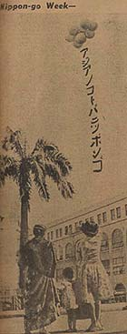

|
j
a v a s c r i p t |
August 25, 1943

"Asia's Language Nippon-go"
"Nippongo Week to Start Today." Everyone says: "Nippon, GO!" The people here very much want Manila to be bombed for the effect it would have on the Japanese and collaborators. The number of people sympathetic to Japan has declined to almost zero. A fanatically anti-American Spaniard was heard cussing them, and explained, "Well, at least you can live with the Americans, but these ... are impossible." Even those getting rich today coddle up to the Japanese by day and berate them by night. Madame Bernard who lives a few houses from us knows Kodaki very well. One day, in a pessimistic mood, he told her: Things don't look so well for us here. We've done everything we could for the Filipinos but they just won't take to us. I fear trouble, especially in the provinces. Over there, only one percent of the population is collaborating. I've heard a few rumblings from Laguna that I dismissed as gossip. But Kodaki's remark woke me up. Today I heard that the Laguna area is practically under martial law as the Japanese there have gone haywire after guerilla attacks. They've taken to locking up the population of whole towns in a church or barn for 3 to 6 days — practically starving them to death. |
|
|
|
|